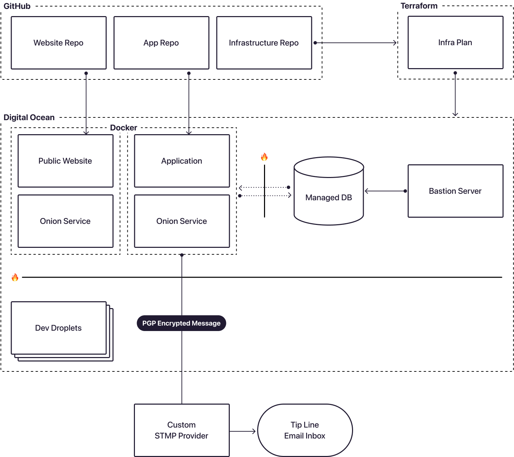
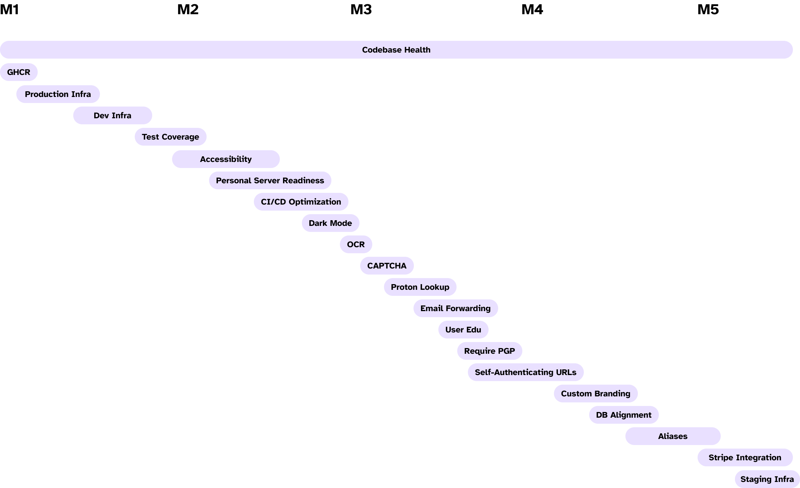

📖
Case Study: Hush Line
A Cross-Industry, Open-Source Whistleblower Management System For Organizations and Individuals.
A whistleblower is an insider to an organization who exposes evidence of wrongdoing to authorities or the press with the intention of reforming it [1]. Not just an activity for exposing National Security secrets, whistleblowing can help make schools safer, businesses more compliant and ethical, and journalists more informed.
Disclosing secrets is vitally important and simultaneously one of the most dangerous things an individual can do, especially in the context of government and national security secrets. People who leak information often go into it without a plan, leading to exile, imprisonment, and even death. To protect against the discovery of someone leaking documents, many tools available today offer Tor-only solutions — meaning the tools they use to upload documents are only accessible through special software providing anonymizing connections to the internet. While an essential piece of the puzzle, requiring someone to download software that could make them look suspicious as the only way to share information is a non-starter, especially for people in countries where internet freedoms are restricted.
But what about the students who need to have a safe way to report information to educators about school safety, teacher misconduct, or struggles at home? Or the businesses that need methods for employees to report information that could lead to legal liabilities, including SEC violations or other lawsuits, without risking their careers and livelihoods? Or journalists who need an easy and safe way to receive information without requiring the public to learn a new esoteric technology?
In this paper, we’ll see how Hush Line can meet all threat models, from nation-states to neighborhoods, by providing a product suite that is both usable by non-technical individuals and also highly resilient to censorship and surveillance.
Most people will witness workplace harassment or discrimination, yet very few speak up [2]. The fear of retaliation creates a chilling effect that enables bad behavior that could lead to SEC violations or other legal risks for the company. In schools, students today have to go through active shooter drills and worry about gun violence, yet are afraid to speak up if it’ll risk their reputation. And the business of journalism is changing, with budgets shrinking by 25% over the last decade [3]. How, too, should our tools evolve?
This paper presents Hush Line, a new managed whistleblowing platform designed with usability, accessibility, privacy, and security in mind. Hush Line is designed to be a managed service, meaning anyone can come to the platform at https://hushline.app, create an account without providing any personally identifying information (PII), and have an anonymous tip line. Where others require specialized infrastructure to manage a tip line, Hush Line does this for you so that you can focus on the mission, not the machines.
One of Hush Line’s strengths is its flexibility, deploying to both a clear web address (https://hushline.app) and a Tor Onion Service (http://j5k...2ad.onion) for users who require advanced levels of anonymity. If, for example, a journalist only needs a Tor-only option, they may choose never to disclose our clear web address to their audience and only share their onion address (http://j5k...2ad.onion/tips/submit_message/artvandelay). And for the cases where it is critical to offer an address reachable by regular browsers — Firefox, Sarafi, Chrome — a user may choose only to share the clearweb URL (https://hushline.app/tips/submit_message/artvandelay).
For users who do need complete control of their infrastructure, we offer a product called the Hush Line Personal Server, a physical device that runs your own instance of the Hush Line platform and deploys as a Tor-only service. For those who want to host the Hush Line platform on their own infrastructure, we provide an official software package on the GitHub Container Registry [4]. Our product is free and open-source for those who want even more control of the code, allowing anyone to copy and modify it for their needs.
To understand our target audiences’ needs and requirements, we interviewed former whistleblowers, lawyers specializing in whistleblowing law, journalists, educators, and business owners. In addition, we also ran a beta program for approximately six months to test an early prototype of the platform with real users and to gather first-hand feedback. During the beta period, we identified and successfully addressed vulnerabilities in the prototype with the community’s support, leading to a more robust production application. We spoke to authors of previous research papers, former whistleblowers, and lawyers specializing in whistleblower law.
Hush Line will serve as a product that meets users’ needs across threat models and use cases. We remove the need for technical proficiency or complex requirements and offer a platform and interaction model that people are already familiar with. We hope this approach, which focuses on usability, accessibility, privacy, and security will lead to a more informed public, safer schools, and more ethical businesses.
The Problems We’re Solving
Journalism
It’s not unique to Journalism, but from 2008 through 2020, there was a 26% decrease in newsroom headcount, totaling about 30,000 employees [5]. With the realities of the changing workplace, tools requiring significant people-time, training, and maintenance are hard to justify. The software offered to journalists must meet them where they are, not require they change their behavior. Hush Line delivers end-to-end encrypted messages directly in your inbox so you don’t have to download another app.
Education
A 16-year study of one school showed that the feeling of safety went down when they implemented physical security measures, including metal detectors and gates and removing decorative elements from campus. Peer violence increased, calls to the police quadrupled, and teachers grew increasingly concerned [6]. Speaking with students in West Oakland, California, one 10-year-old girl said that if necessary, she would report information, but only if it wouldn’t impact her reputation. How might schools be safer if there was a trustworthy way for students to privately communicate with trusted educators?
Business
Up to 90% of women in the restaurant industry experience sexual assault or harassment [7], and 61% of all workers will witness or experience workplace harassment or discrimination. Stemming from fear of retaliation, fewer than 1 in 3 will make a formal complaint, and fewer than 1% find victory in court [8].
Conversely, businesses can incur substantial penalties for SEC violations or other offenses that could have been caught sooner. In 2023, global tech company AAB Ltd. agreed to pay a $75 million civil penalty for bribery-related charges. Goldman Sachs paid a $6 million civil penalty for a decade of fraudulent behavior, during which they made more than 22,000 deficient financial transactions [9].
The Price of Whistleblowing
Whistleblowing is a risky endeavor. The examples below illustrate that tools alone are never enough. We’ll see stories highlighting different avenues individuals have taken and their outcomes.
Edward Snowden
One of the most influential whistleblowers of the last decades is Edward Snowden. He leaked a cache of documents he collected about NSA mass surveillance to journalists. His whistleblowing led to legislative reform in the USA, increased public awareness about whistleblowing and mass surveillance operations in America, and inspired the creation of new products designed to allow safer sharing of information for whistleblowers, including Signal, OnionShare, and even Hush Line.
Snowden, easily one of the more technical whistleblowers of recent memory, was familiar with Tor and used Tails [10], an operating system that deletes all data when it shuts down, and whose traffic is completely tunneled through the Tor Network. Yet when he needed to securely contact journalists, he found the journalists lacked the technical ability to set up encrypted communications correctly. Snowden couldn’t find journalist Glenn Greenwald’s public PGP key, and even when Greenwald did get it configured with the help of Micah Lee [11], Snowden forgot to attach his own key in a message so Greenwald could privately respond. Snowden understood how the system worked and which technologies were resistant to surveillance, yet despite his knowledge, he is now exiled in Russia [12].
Chelsea Manning
Chelsea Manning is a former Army private who, working with Julian Assange of WikiLeaks, leaked information that included evidence of war crimes committed by the US [13].
While Chelsea had technical skills, she was living in the chaos of war, and was eventually caught because she shared information in an online chat with Adrian Lamo, a former hacker turned government informant, who reported the information to the FBI, which included evidence of Manning’s crimes. Chelsea Manning spent seven years in prison before President Obama pardoned her in 2017 [14].
Andrew Aude
Andrew Aude [15] is a former Apple software engineer who used Signal on his work-issued device for years to share confidential information with a journalist. Messages included trade secrets, financial information, and details about product roadmaps and launch dates.
Despite his technical proficiency — passing the impressive standard of Apple employment — and using Signal, he was caught. Though the encryption was strong, and even if he were using an anonymizing VPN or Tor, his error was using a device issued by his employer.
Mobile device management (MDM) software allows your employer to provision and manage hardware devices like mobile phones, tablets, or computers. Especially for a company like Apple, which employs ~164,000 people, MDM software enables your employer, for example, to make sure proprietary apps for employee resources like HR or Legal are available to everyone immediately or apply consistent and timely security updates or make sure everyone’s VPN credentials are correctly configured without hoping that hundreds of thousands of employees to get it right on their own. MDM software can also take screenshots or live-monitor any device in its network. So despite doing a lot of things right, if your adversary can take a screenshot of your conversation, it doesn’t matter what app or tech you use to protect your data.
John Barnett
John Barnett was a Boeing whistleblower and former quality manager who disclosed safety concerns using official governmental channels with the 787s being made in his factory [16]. He filed an official complaint with the US Labor Department under an official whistleblower protection program [16]. He’d eventually bring a lawsuit against the company for the retaliation he experienced after sharing information with the Labor Department.
John Barnett was at no time anonymous in his reporting and disclosing safety concerns about the Boeing 787. He ultimately experienced retaliation from Boeing because of this information sharing, and filed a lawsuit against them. It was during this period of engaging in a public lawsuit with Boeing, that he was found dead from a self-inflicted gunshot [16].
Security Goals and Principles
Through speaking to former whistleblowers, journalists, and lawyers, and by reading academic papers published worldwide, we arrived at a set of guiding goals and principles:
- Usability: No matter how technically advanced your software is, adoption will fail if a whistleblower can’t use it.
- Authenticity: Whistleblowers must have confidence they’re communicating with the right person.
- Deniability: Requiring whistleblowers to download software that could land someone in jail is a non-starter.
- Availability: Whistleblowers must be able to access your software when they need it.
- Anonymity: Software makers must do everything they can to protect source anonymity.
- Confidentiality: Messages must remain secret. Communication between whistleblowers and other parties is protected and not the business of the software makers.
Current Tools
To better understand why a tool like Hush Line is necessary, we should consider two things: 1. the needs of the whistleblower and 2. the tools currently available (Table 1). In this paper, we’ll focus on three leading tools that provide examples of managed services, self-hosted options, and on-prem solutions: Signal, GlobaLeaks, and Secure Drop.
| Product | Type | Open-Source | E2EE | Onion Service | Verification System | Free | Non-Profit | User Directory |
|---|---|---|---|---|---|---|---|---|
| Afri-LEAKS (Onion) | Self-Hosted (Globa-Leaks Instance) | ✅ Open-Source | ✅ E2EE | ✅ Onion Service | ⛔️ No Verification | ✅ Free | ⛔️ Not Non-Profit | ✅ User Directory |
| CaseIQ | Managed | ⛔️ Not Open-Source | ⛔️ No E2EE | ⛔️ No Onion Service | ⛔️ No Verification | ⛔️ Not Free | ⛔️ Not Non-Profit | ⛔️ No User Directory |
| Castillo | Managed | ⛔️ Not Open-Source | ✅ E2EE | ⛔️ No Onion Service | ⛔️ No Verification | ⛔️ Not Free | ⛔️ Not Non-Profit | ⛔️ No User Directory |
| Confide | Managed | ⛔️ Not Open-Source | ⛔️ No E2EE | ⛔️ No Onion Service | ⛔️ No Verification | ⛔️ Not Free | ⛔️ Not Non-Profit | ⛔️ No User Directory |
| FaceUp | Managed | ⛔️ Not Open-Source | ✅ E2EE | ✅ Onion Service | ⛔️ No Verification | ⛔️ Not Free | ⛔️ Non-Profit | ⛔️ No User Directory |
| GlobaLeaks | Self-Hosted | ✅ Open-Source | ✅ E2EE | ✅ Onion Service | ⛔️ No Verification | ✅ Free | ⛔️ Not Non-Profit | ⛔️ No User Directory |
| Hush Line | Managed, On-Prem, Self-Hosted | ✅ Open-Source | ✅ E2EE | ✅ Onion Service | ✅ Verification System | ✅ Free | ✅ on-Profit | ✅ User Directory |
| Say Something | Managed | ⛔️ Not Open-Source | ⛔️ No E2EE | ⛔️ No Onion Service | ⛔️ No Verification | ⛔️ Unknown Free Status | ⛔️ Not Non-Profit | ⛔️ No User Directory |
| Secure Drop | On-Prem | ✅ Open-Source | ⛔️ No E2EE | ✅ Onion Service | ⛔️ No Verification | ✅ Free | ✅ Non-Profit | ✅ User Directory |
| Signal | Managed | ✅ Open-Source | ✅ E2EE | ⛔️ No Onion Service | ⛔️ No Verification | ✅ Free | ✅ Non-Profit | ⛔️ No User Directory |
| Whispli | Managed | ⛔️ Not Open-Source | ⛔️ No E2EE | ⛔️ No Onion Service | ⛔️ No Verification | ⛔️ Not Free | ⛔️ Not Non-Profit | ⛔️ No User Directory |
Secure Drop
SecureDrop [25] is a tool maintained by the Freedom of the Press Foundation [27], a 501(c)(3) focusing on defending journalism around the world. Created originally by Aaron Swartz and then inherited by FPF, it is a self-hosted system consisting of different servers for receiving, viewing, and handling files on dedicated network connections and air-gapped devices. Customers are responsible for finding and purchasing compatible hardware.
To help simplify their approach, a new product called the Secure Drop Workstation is being developed and built on top of Qubes OS, a new security-focused desktop operating system [28]. The software provides functionality that compartmentalizes all of that physical infrastructure on a single computer. The Workstation swaps servers with virtual machines serving similar purposes. While more streamlined, Qubes OS is only compatible with limited hardware, which customers must also find and purchase.
Limitations
A whistleblower who uses Secure Drop faces a few obstacles. First, it is a Tor-only solution, which presents significant risks to anyone in countries where the internet is surveilled and free speech is limited. Recently, activists have even been arrested for having Tor on their mobile devices, as with Ola Bini in Ecuador.
Signal
Signal [26] is considered a gold standard for secure communication. We use it internally at Science & Design for team collaboration and trust it to keep confidential messages safe. Signal is a messaging app that is available primarily as a native mobile application for iOS and Android, just like WhatsApp. Desktop apps exist, but they require pairing with a registered phone. Signal is one of the few open-source apps, aside from Firefox and Tor, that have penetrated the public consciousness. Signal collaborated with WhatsApp to integrate Signal’s encryption protocol into WhatsApp, instantly providing strong encryption for billions of WhatsApp users globally. Signal is a tool many on the Hush Line team have contributed to.
Limitations
However, the problem arises with the lack of anonymity because in order to use the Signal app, one must download it from an app store like Apple’s App Store or Google’s Play Store. To do this, users must create an account using PII, leaking their identities to at least one party in the exchange. It’s commonplace for these companies to comply with requests from law enforcement, both foreign and domestic. Then, to register an account, a user needs a cell phone number. Acquiring a cell phone requires more PII, this time with your ID likely scanned to know your customer (KYC) regulatory requirements. This is another scenario where the company must comply with law enforcement requests for customer information. Now, at least two parties know who you are. While advanced workarounds exist to approximate anonymity, they are not doable for non-technical users or individuals without extensive programming skills, ultimately rendering anonymity impossible for the broader general public.
GlobaLeaks
GlobaLeaks [22] is a project out of Italy and is a self-hosted platform that’s easy to install and use. It allows a developer to set it up on standard hardware and provides a rich and customizable platform for creating forms that meet your needs. GlobaLeaks, because of its relative ease of installation, is one of the most ubiquitous tip lines used by organizations worldwide today. There are forks, or copies and modifications of the code, like AfriLeaks, that host more instances of GlobaLeaks for other news organizations.
Limitations
While easier than Secure Drop, GlobaLeaks still requires a developer and hosting your own infrastructure, making it less likely to be understood or used by the general public or individuals who do not have developer specialty knowledge. While the platform installs relatively simply, HTTPS is unavailable by default, and additional work must be done to deploy it to your domain name. Some users have reported issues about the platform’s usability, while others suffer downtime from misconfigurations.
Other Tools
Other tools in Table 1 include both closed-source and for-profit options. We believe that a tool catering to higher-risk use cases must be open-source and verifiable so that the public can trust the software to protect them to the best of its ability. One noteworthy closed-source option is Say Something [24], a tip line from the survivors of the Sandy Hook massacre focused on school safety and gun violence.
Threat Model
What’s Different About Hush Line
Hush Line is unique among whistleblower products as the only managed service that is free and open-source. Where other models distribute the risk to the individual customer, we are a centralized service, offering some liberties and other constraints: We can allow anyone to create an account, but consistent with other tip line/whistleblower platforms, we’re also open to online attacks like denial of service or hacking attempts.
Challenges With Scale and Centralization
Because of SecureDrop’s decentralized nature — meaning there isn’t one central server running all of the instances — an attack on one server is not an attack on all. However, that means that when there is an attack on three to thirty servers, there are three to thirty servers to defend, maintain, and fix. More directly, there are ~70 Secure Drop instances worldwide, but only one instance of Hush Line, managed by Science & Design. Among other benefits of centralizing our services is that it allows us to have more users; at the end of the beta period, we had >10x more active instances of Secure Drop than all active instances. Other things Hush Line needs to consider are traffic, bad actors, and paying for and maintaining the app’s infrastructure.
Users
| User Type | Goal |
|---|---|
| Submitter | Individual who sends a message. |
| Receiver | Individual or organization representative who reads messages. |
| Verifier | Staff member who verifies account owners (journalists, public figures, businesses). |
| Service Provider | Individual or organization who provides Hush Line services. |
| Server Admin | Individual who maintains the server operating Hush Line. |
Adversaries
| User Type | Goal |
|---|---|
| Passive Observer | Passively logs client IP addresses and their corresponding inbound/outbound connections (school/work networks, ISPs, DNS providers). |
| Active Observer | Targets specific connections. |
| Passive Attacker | Scans the internet for vulnerabilities to take advantage of. |
| Active Attacker | Seeks persistence, exploitation of known vulnerabilities, and seizure of physical equipment. |
Assumptions
The following assumptions are accepted in the threat model of the Hush Line product:
Assumptions About the Individual Submitting a Message
- The individual submitting a message does so in good faith.
- The individual submitting a message wants to remain anonymous against a network observer, forensic analysis, or to Hush Line servers.
- The individual submitting a message is accessing the official Hush Line site.
Assumptions About the Person or Organization Receiving a Message
- The receiver operates Hush Line in good faith.
Assumptions About the Hush Line Server
- The server is operated in good faith.
- The server is single-use and configured with the official scripts on the GitHub main repo.
- The server has no other software other than what is required for the operation of Hush Line.
Assumptions About the Source's Computer
- The computer has an updated version of a popular browser including Chrome, Firefox, or Safari, and for anonymous connections, an updated version of Tor Browser.
- The computer is not compromised by malware.
Assumptions About Science & Design, Inc.
- Science & Design wants to preserve the anonymity of its sources.
- Science & Design acts in the interest of allowing sources to submit messages, regardless of their contents.
- The users of the system, and those with physical access to the servers, can be trusted to uphold the previous assumptions unless the entire organization has been compromised.
- Science & Design is prepared to push back on any and all requests to compromise the integrity of the system and its users, including requests to deanonymize sources, block message submissions, or hand over encrypted or decrypted submissions.
Assumptions About the World
- The security assumptions of `passlib` and `scrypt` with randomly generated salts are valid.
- The security/anonymity assumptions of Tor and the Onion service protocol are valid.
- The security assumptions of Hush Line dependencies, application packages, and application dependencies, are valid.
Other Assumptions or Factors
- The level of press freedom may vary in both geography and time.
- The number of daily Tor users in a country can greatly vary.
Threats, Failure Points, Impacts and Mitigations
Threat: Server Compromise
- Impacts: If an attacker obtains the database encryption key, its contents may be decrypted. Still, we do not require PII. If you have SMTP delivery configured, your forwarding address will be visible. If you haven’t added your own public PGP key to your account, message content will be visible.
- Mitigation: Hush Line does not require PII, including an email address, to use the service. To protect message content, users are encouraged to add their own PGP key. We store data encrypted in our database, and do not store timestamps or associate member data in any way. The database key is never hardcoded, is isolated from both app and database environments, and is stored in Terraform platform environment variables, removing the chance of exposure to the source code.
Threat: Network Observers
- Impacts: Adversaries who monitor network connections to our server can see your IP address and the domain you’re visiting.
- Mitigation: All data in transit is encrypted using TLS, and users are encouraged to access Hush Line via Tor for additional anonymity. This prevents network observers from deciphering the content or metadata of communications.
Threat: Account Compromise
- Impacts: Disruption of Hush Line usage, impersonation which could lead to reputational harm or other damages.
- Mitigation: Strong password policies, optional 2FA, and secure password reset mechanisms are in place to protect user accounts. Users are educated on best practices for maintaining account security.
Threat: Legal and Coercive Pressure
- Impacts: Science & Design, Inc. and Hush Line must comply with legitimate legal requests, which could result in the forfeiture of data that includes your username, SMTP information, public PGP key, or other information you provide to Hush Line. No PII is required to use the Hush Line service, but if you’ve donated to our Open Collective or purchased anything from our Shopify store, potentially identifying information, including your shipping and billing address, name, email address, and IP address, could be tied back to you with sufficient analysis.
- Mitigation: Hush Line is designed to hold minimal information that could be of interest in legal contexts.
Failure Points
The Human Element
The human element encompasses anything a person can touch. For developers, it means the code they write; for journalists, it means the tools they use and how they are used. Bugs are always part of software engineering, and we should never assume there is a “perfect” state of security or anonymity. If you give users a robust and well-considered privacy policy, we know they won’t read it. And it’s safe to assume that humans will look for shortcuts when presented with complex workflows. This includes using work-issued devices or networks to communicate with journalists or exfiltrate secret information.
Compromised Devices
The human element includes compromising devices. Few guardrails on Android protect users from installing malware from unknown sources, and even Google’s Play Store hosts applications that contain malware [29]. It doesn’t have to be as obvious as installing suspicious software from suspicious sources. It can be as simple as clicking a link and loading a URL, or even loading images in your email client [30]:
“As described in the proof-of-concept attack released by the researchers, the attacker uses one of the encrypted messages you are supposed to receive or might have already received and then turns it into a multipart HTML email message, as well as forges the return address, so it appears to come from the original sender. In the newly composed email, the attacker adds an unclosed image tag, like this, as clearly shown in the screenshot. When your vulnerable email client receives this message, it decrypts the encrypted part of the message given in the middle, and then automatically tries to render the HTML content, i.e., the image tag with all the decrypted text as the new name of the image, as shown below. Since your email client will try to load the image from the attacker-controlled server, the attacker can capture this incoming request, where the filename contains the full content of the original encrypted email in plaintext.”
Compromised Infrastructure
Hush Line uses cloud providers to manage our application and database. Our distributed approach increases security by isolating our database from the application environment and limiting access. But with this convenience comes the risk of our providers receiving a gag order and being forced to install monitoring software, lest they want to face prison or time-consuming legal proceedings.
Hush Line’s Additional Protections
Verification System
Hush Line employs a verification system to ensure that users can trust the source of communication. This system is essential for users who are public figures or have a broad audience. The verification system includes:
- Display of Verification Status: Hush Line indicates verified accounts with a distinctive **Verified** badge. This visual indicator helps users distinguish authentic accounts from potential impersonators, reducing the risk of phishing attacks.
- Data Retention: The information used to verify you is never saved, even temporarily.
User Education
- Encryption Indicators: The platform informs users whether their messages will be encrypted. For accounts with a public PGP key, messages are encrypted, ensuring that only the intended recipient can decrypt and read them. This feature is highlighted through messages on the submission form, emphasizing the importance of encryption for sensitive information.
User Guidance
- Informative Messages for Senders and Receivers: Hush Line educates its users about the significance of encryption and the steps required to ensure message confidentiality. This includes prompts for receivers to add a public PGP key if they haven’t already, and notifications for senders about the encryption status of their message.
Hush Line addresses the problems we've observed across different industries: high costs and usability challenges of existing solutions, shrinking budgets in newsrooms, classrooms, and workplaces, and the absence of an open-source managed service operated by a non-profit.
The threats vary in severity, but the needs across job roles and use cases are similar. Whether nation-states or neighborhood watches, individuals need a highly available, usable, and affordable product. Most people needing confidential reporting are busy and don't have the time to adopt a new workflow or learn new technology. When a whistleblower decides to talk to a lawyer or journalist, they're vulnerable and likely have already faced retaliation. Hush Line removes all technical hurdles from people who need help by offering a platform that is accessible with the software already on your phone or computer.
We use widely adopted, time-tested standards and protocols, allowing for greater interoperability with popular tools like Proton Mail and Mailvelope. We designed Hush Line to shine as a background service - understanding that many people have app-overload and adding anything new is a big request. Hush Line forwards encrypted messages to your email inbox, ensuring you never miss an important tip.
Our Users
| User Group | Needs | Pain Points |
|---|---|---|
| Whistleblowers |
- Helpful guidance - Trustworthy tools - Legal protection - Confidential communication |
- Trust in tools and people - Gathering evidence - Financial support - Career risks |
| Lawyers |
- Low-effort tools to receive whistleblower messages - Tools to help analyze technical data - Evidence to support claims |
- Overwhelming amounts of data - Not enough time or staff to handle all clients - Hard to use tools requiring specialized training |
| Journalists |
- Secure communication channels with whistleblowers - Access to verified information - Tools for verifying the authenticity of documents |
- Protecting sources' identities - Verifying information under tight deadlines - Risk of legal repercussions |
| Educators |
- Educational materials on whistleblowing - Case studies and real-world examples - Tools for facilitating anonymous reporting within educational institutions |
- Lack of awareness about whistleblowing - Ensuring students understand the importance of confidentiality - Integrating whistleblowing topics into the curriculum |
| Businesses |
- Anonymous reporting channels for employees - Tools for monitoring and managing reports - Support for legal and compliance requirements |
- Building trust in the reporting process - Managing and responding to reports efficiently - Balancing transparency with confidentiality |
System Requirements
We built Hush Line as a managed service designed for high availability, usability, and security. While Hush Line is intended for users to create an account on `hushline.app`, we encourage people and organizations to self-host if they prefer. For consistent implementation, we provide full documentation on getting it started for your organization.
Architecture
Hush Line Technical Architecture
We use a combination of Digital Ocean, Terraform, and GitHub to automate our build and release pipeline and disposable development environments.
Database Isolation
To help defend against database compromise, we isolate resources, as seen in Diagram 1. In the event that the application server becomes compromised, lateral movement to the database is not possible. We use TLS encryption for connections to and from the database and restrict access to application and bastion servers.
Bastion Server
The only way to access the database is through a Bastion server — an isolated server that infrastructure owners SSH into and then connect to the database. Access to the Bastion server is restricted to relevant technical staff, and SSH is completely disabled to the database server.
Mail Forwarding
Email forwarding is a convenient and user-friendly feature. Our integration of Mailgun allows a tip line owner to enter their email address, and forwarding will work. Alternatively, a user may use a custom SMTP provider or have no SMTP forwarding at all. Custom configurations mean end users must have technical proficiency in finding their SMTP server, port, username, and password if their email provider supports it.
Onion Services
We use Onion Services for users with advanced privacy needs. An Onion Service issues our app and website a `.onion` address, making it accessible anonymously using the Tor Browser. Onion Services bypass DNS by never exiting the Tor Network to reach its destination. Our Onion Services are run in isolated containers for increased security.
Managed Services
Using managed services always comes with tradeoffs. On one hand, they add a layer of risk by trusting a third party. On the other hand, they allow us to minimize risk by offloading server and database maintenance. Hush Line addresses this by requiring a PGP key to enable email forwarding and ensuring plaintext messages are never shared outside of our hosting platform, Digital Ocean, in our case.
Product Design
Whistleblowing is a scary, unfamiliar process, and the software you use should be disarming while doing all it can to keep you safe. We’re a text-only service and encourage users to begin with a plan rather than grabbing and dumping loads of information. We think that through guidance and education, users can keep themselves safe while engaging in responsible disclosure.
Interface Design
The application’s UI leans into conversational conventions with a sense of levity, using emoji throughout the interface text. It tries not to rush the user but rather present information in a friendly way that helps educate the whistleblower while maintaining a high standard for usability.
Interaction Design
Perhaps what differentiates Hush Line the most is that we’re a centralized service. Rather than depending on individual self-hosters to configure their own instances correctly, we manage all of the services, so users don’t have to worry about specialized tech and can instead focus on their work.
Like any modern web service, including Instagram, Google, or Signal, a user may go to the Hush Line app and create an account to use the platform. In a Settings panel, individuals can add their own PGP key, set up email forwarding, add a display name, or enable two-factor authentication.
Accessibility
Hush Line received a service grant from Open Tech Fund in the form of an accessibility audit. The audit’s goals were to make the screen-reader experience usable, descriptive, and intentional.
To CAPTCHA?
Throughout the beta period, users received spam messages. Since messages can be end-to-end encrypted, combined with using custom SMTP settings, client-side filtering is an imperfect solution.
hCaptcha
An analysis of an hCaptcha integration showed multiple external site connections, increasing IP leakage just to send a message. There are also security tradeoffs since “it loads `https://newassets.hcaptcha.com//captcha/v1/988e468/hcaptcha.js` along with multiple other javascript source files, and it executes them in the browser.” [31]
Local Captcha
We explored CAPTCHA options including creating an image with letters and numbers obstructed by randomly drawn lines and presenting a basic math problem. Using an image was a blocker due to accessibility limitations: a bling user won’t be able to read the image, even with assistive technology, and therefore wouldn’t be able to submit a message. A math problem, while not perfect, only needs to catch most bots, and since it’s an accessible solution, it was our best option.
@app.route("/submit_message/", methods=["GET",
"POST"])
def submit_message(username: str) -> Response | str:
form = MessageForm()
user =
User.query.filter_by(primary_username=username).first()
if request.method == "GET":
# Generate a simple math problem
num1 = secrets.randbelow(10) + 1
num2 = secrets.randbelow(10) + 1
math_problem = f"{num1} + {num2} ="
session["math_answer"] = str(num1 + num2) # Store the answer
if form.validate_on_submit():
captcha_answer = request.form.get("captcha_answer", "")
if not validate_captcha(captcha_answer):
return redirect(url_for("submit_message",
username=username))
# Save the message or handle encryption (omitted for
brevity)
return render_template(
"submit_message.html",
form=form,
user=user,
math_problem=math_problem,
)
def validate_captcha(captcha_answer: str) -> bool:
if not captcha_answer.isdigit():
flash("Incorrect CAPTCHA. Please enter a valid number.",
"error")
return False
if captcha_answer != session.get("math_answer"):
flash("Incorrect CAPTCHA. Please try again.", "error")
return False
return True
Making PGP Slightly Easier
Pretty Good Privacy (PGP)
PGP works using public/private key encryption. Think of your public key as envelopes made just for you and the private key as a special letter opener, the only thing in the world that can open those envelopes.
Most of the time, PGP works by two people individually, creating a public/private key pair. They first exchange public keys and may begin sending encrypted messages. Only the sender and receiver’s private keys, which are never shared with anyone, can decrypt the messages.
Proton
We recommend using Hush Line in conjunction with Proton. Proton provides encrypted productivity tools, with Proton Mail being their flagship application. Proton Mail is an email provider like Gmail, but it is encrypted, so only you can read its contents, not the company or even an attacker with access to its servers. Like Hush Line, Proton uses PGP for message encryption, so a user may download a copy of their Proton public PGP key in Mail settings. A user adds that key to their Hush Line settings, and also adds their Proton Mail address for email forwarding, and now any tips submitted to your Hush Line will be delivered to Proton, and since you have the private key already there, they’ll automatically be decrypted for you!
Mailvelope
For users of other email services, including Gmail, we’ve integrated Mailvelope, a powerful browser extension that enables PGP encryption and decryption directly in the browser. Users may install the Mailvelope browser extension on Chrome or Firefox, and once configured, can read decoded messages without any other application.
Limitations
Money
Scale and money are the main limiters for a web application. Currently, at ~$1,500/yr, it’s a manageable number, even if the hosting organization took it on entirely. However, as we scale, costs may significantly increase to more than is sustainable without a financial model to support the service.
User Error
We also cannot account for the operational security or online behavior of individuals using our platform. For example, if a whistleblower uses a compromised device to record their screen, Hush Line cannot protect their communications.
Governments
Our services are hosted in the United States, which has National Security laws that may force a provider, including us, to remain silent about orders received. This means that if Digital Ocean received an order to monitor Hush Line’s servers, they may not be allowed to tell us about it. This is why we encourage all users to add a PGP key to their account.
Developer Error
Humans will make errors. Even the developers of Hush Line, despite their expertise, are still prone to errors. Hush Line is proudly open source, and we encourage the community of users, hackers, security researchers, and others to find ways to improve.
MVP Maintenance Cost and Resource Overview
| Item | Specs | Monthly Cost | Annual Cost |
|---|---|---|---|
| Managed Database | 512 MB, 10 GB Disk | $60/mo | $720/yr |
| Email Forwarding | $35/mo | $420/yr | |
| App - Production App | 1 GB RAM, 1 vCPU, 150 GB Bandwidth | $12/mo | $144/yr |
| App - Onion Service | 512 MB RAM, 1 vCPU, 50 GB Bandwidth | $5/mo | $60/yr |
| Website - Public Website | 512 MB RAM, 1 vCPU, 50 GB Bandwidth | $5/mo | $60/yr |
| Website - Onion Service | 512 MB RAM, 1 vCPU, 50 GB Bandwidth | $5/mo | $60/yr |
| Bastion Server | 512 MB RAM, 1 vCPU, 10 GB Disk | $4/mo | $48/yr |
| Dev Droplets | 512 MB RAM, 1 vCPU, 50 GB Bandwidth | $4/mo | $48 per droplet/yr |
| Total | $130/mo | $1,560/yr |
Personal Server
As we’ve seen, the convenience of centralized web applications provides opportunities for high availability, scalability, and usability, we know that sometimes a user’s threat models include not trusting any third parties. In this situation, we offer the Hush Line Personal Server. It hosts the entire Hush Line platform on a self-hosted device. We designed a custom case milled from solid aircraft-grade aluminum that physically closes access to all ports except power and ethernet, making it resistant to Evil Maid attacks. Additionally, we disable SSH, USB, and Wifi on the device. A user boots it up, and an e-paper display will show a QR code with the address to their Hush Line Onion Service instance.
System Requirements
The Personal Server is designed to be deployable to hardware with limited resources, specifically the Raspberry Pi. It uses a pre-built image and Docker to containerize the app, onion service, and database. The Personal Server is a consumer device that packages a Raspberry Pi 4 with 1 GB RAM, an e-paper display, and a custom, security-focused case.
Costs
| Item | Specs | Cost |
|---|---|---|
| Internet Service | 100 Gbps — 1,000 Gbps | ~$50/mo |
| Raspberry Pi 4B | 1GB RAM | $35 |
| Waveshare E-Paper HAT | 264x176, 2.7 inch | $18.99 |
| Personal Server Security Case | Milled A606 Alloy | Indiv. Cases Not Available |
| Ethernet Cable | CAT 5–8 | ~$20 |
| One-Time Costs | $73.99 | |
| Recurring Costs | ~$50/mo |
Architecture
Everything runs locally on the Personal Server. Using Ansible to deploy and Docker to run the application makes it easy to replicate builds and ensure consistency (Figure 5). In place of a managed database, we use `sqlite3` locally, and instead of using RiseUp for email forwarding, SMTP relies on custom configurations set by users.

Defending Against Physical Access
Unique Identification
The only access to the device is by removing the lid, and to help defend against physical access, uniquely numbered, tamper-evident tags seal the lid to the body. Personal Server owners are encouraged to copy their cover numbers down; if tampering is ever suspected, they may verify that they match.
Custom Case
We designed custom cases milled from solid A606 alloy. All ports, except for power and ethernet, are sealed from physical access. The lid is a 5mm piece of smoked acrylic, giving a clear view of the e-paper display, which shows a QR code embedded with the device’s onion address.
Everything is plug-and-play; the owner needs no specialized training to set up and operate the Personal Server. Our custom cases are not for sale individually; we are exclusive distributors.
Ethical Monetization
Hush Line is proudly supported by the Data Empowerment Fund, but Science & Design, Inc. is a 501(c)(3) and, as a non-profit, receives most financing through grant cycles that are both inconsistent and insufficient. Understanding the cost associated with web services, Science & Design understands the need to seek product sustainability through financial sustainability. We are seeking a path toward ethical monetization through paid tiers of features targeted at business users. We will always provide our core services for free, and will continue researching how to make Hush Line more valuable for paying customers while maintaining our non-profit principles.
| Feature | Free | Super Users | Single-Tenant |
|---|---|---|---|
| Daily Messages | Unlimited Messages | Unlimited Messages | Unlimited Messages |
| End-to-End Encryption | ✅ E2EE (Free) | ✅ E2EE (Super User) | ✅ E2EE (Single Tenant) |
| 2FA (Two-Factor Authentication) | ✅ 2FA Avail. (Free) | ✅ 2FA Avail. (Super User) | ✅ 2FA Avail. (Single Tenant) |
| No Logging | ✅ No Logs (Free) | ✅ No Logs (Super User) | ✅ No Logs (Single Tenant) |
| Verified Accounts | ✅ Verified Accounts (Free) | ✅ Verified Accounts (Super User) | ✅ Verified Accounts (Single Tenant) |
| Self-Authenticating URLs | ✅ Authenticating URLs (Free) | ✅ Authenticating URLs (Super User) | ✅ Authenticating URLs (Single Tenant) |
| OCR Vision Assistant | ✅ OCR Avail. (Free) | ✅ OCR Avail. (Super User) | ✅ OCR Avail. (Single Tenant) |
| Mailvelope | ✅ Mailvelope Avail. (Free) | ✅ Mailvelope Avail. (Super User) | ✅ Mailvelope Avail. (Single Tenant) |
| Auto-Deleting Messages | ✅ Auto-Deleting Msgs. (Free) | ✅ Auto-Deleting Msgs. (Super User) | ✅ Auto-Deleting Msgs. (Single Tenant) |
| Simple SMTP | ✅ Riseup (Free) | ✅ Riseup (Super User) | ✅ Riseup (Single Tenant) |
| Aliases | ❌ No Aliases (Free) | ✅ 100 Aliases (Super User) | ✅ Unlimited Aliases (Single Tenant) |
| Custom Subjects | ❌ No Custom Subjects (Free) | ✅ Custom Subjects (Super User) | ✅ Custom Subjects (Single Tenant) |
| Files | ❌ No File Support (Free) | ❌ No File Support (Super User) | ✅ File Support (Single Tenant) |
| Custom Fields | ❌ No Custom Fields (Free) | ❌ No Custom Fields (Super User) | ✅ Custom Fields (Single Tenant) |
| Custom Domain | ❌ No Custom Fields (Free) | ❌ No Custom Fields (Super User) | ✅ Custom Domain (Single Tenant) |
| Branding | ❌ No Branding (Free) | ❌ No Branding (Super User) | ✅ Custom Branding (Single Tenant) |
| Stripe Integration | ✅ Stripe Subscriptions (Free) | ✅ Stripe Subscriptions (Super User) | ❌ Stripe Not Applicable (Single Tenant) |
| Monthly Price/User | $0.00 (Free) | $20.00/mo (Super User) | $159.90/mo (Single Tenant) |
| Annual Price/User | $0.00 (Free) | Monthly Pricing (Super User) | $1,918.80/yr (Single Tenant) |
The Path to Launch
Pre-Release Beta
Before asking funders for support, having a minimum-viable product was an important milestone. To understand how we could improve the service, we ran a six-month beta program. During that time, we interviewed participants who included former whistleblowers, journalists, researchers, and others.
Feedback & Findings
PGP Key Length: Depending on the encryption algorithm and other factors, PGP keys can differ in length significantly. Quickly after kicking off the beta, a participant tried using a key greater than 10,000 characters long an was unable to.
User Directory: After suggestions from one of our subject matter experts, Dr. Martin Shelton, we included an opt-in user directory. This allows whistleblowers to find who they need in a centralized place without hunting around the Internet.
Bios: One prominent whistleblower suggested adding additional social proof, including a bio for the whistleblower: “Making sure the whistleblower can confirm at each step that they’re talking to the right person is incredibly important for the person’s safety.”
Better Message Forwarding: During the beta, we leaned on manual SMTP configuration, asking users to add their SMTP username, password, port, and server. A query at the end of the beta period showed that only 1.35% of participants configured message forwarding.
Beta Numbers
Enrollment numbers for features like two-factor authentication appear low but are actually consistent with what we see with major platforms like Twitter, where the 2FA enrollment was 2.5%, slightly lower than Hush Line’s beta.
- Total Testers: 815
- 2FA Enrolled: 3.07%
- PGP Enabled: 2.82%
- SMTP Enabled: 1.35%
Our First Grant
Hush Line was awarded a $100,000 grant from the Data Empowerment Fund to bring the app from prototype to production. We hired our first engineers, including Micah Lee, the creator of OnionShare, and core Tor Project and SecureDrop developer.
Tentative Grant Budget
- Engineering @ 65%: Infrastructure development, front and back-end engineering, accessibility, and cryptography.
- Infrastructure @ 10%: Costs for hosting on various platforms.
- Product Management @ 15%: Roadmap, UX, UXR, Project Management.
- Org Admin @ 10%: Lights-on fee.
Engineering Timeline & Deliverables
Grant Application
As a new 501(c)(3) non-profit starting from scratch, both financially and from a product perspective, we can confidently say that finding funding is not a trivial pursuit. Unlike businesses in the for-profit sector, VCs do not give millions to non-profits that cannot potentially return a massive profit on their investment. What does that mean for social entrepreneurs who are passionate about change? How do we get started and encourage more to join the fight for more ethical software? To help provide a guide for future creators, we’re including the questions and answers from our successful grant application below.
Questions & Answers
- Describe the problem you are working to solve, or your diagnosis of the status quo and why it must be changed.
- In the workplace, up to 90% of women in some
industries experience sexual assault and harassment. 61%
of employees will witness or experience workplace
harassment or discrimination. Only 18 out of 100 people
will ever make a formal complaint, and fewer than 1%
will find a resolution in court. Fear of retaliation
causes this massive gap in reporting, but people want to
help; they just can’t always take on the risks of public
involvement. This problem has started to gain
legislative support, with the EU Whistleblower Directive
of 2019 coming into effect in 2023. Now, employers must
offer confidential ways through internal and external
channels if they have more than 50 employees.
For newsrooms, budget cuts, and layoffs force organizations to consider new publishing methods. Vice.com and Jezabel shuttering are two recent examples, but a more holistic view shows that from 2008 through 2020, there’s been a 25% decrease in headcount. When approached to adopt whistleblowing tools, the first question many ask is, “Who will manage it?” The tools on the market currently include the robust but prohibitively difficult-to-set-up SecureDrop, and GlobalLeaks, a self-hosted tool requiring technical proficiency to configure and manage.
And in schools, especially in the US, gun violence is an unfortunate reality that students have to live with. When we conducted research with students in West Oakland, we learned that students would speak up if they knew something, but if their “lives will be ruined” by being “labeled as a snitch,” they’ll keep quiet. Coupled with budgets so low that many educators have to buy their own markers, a technical solution for school safety isn’t always practical. - Describe how your initiative is designed to address this problem or bring about this change.
- Currently, no free and open-source managed tip line services are on the market, and this is what Science & Design is excited to bring to the market through Hush Line. We’ll soon launch a platform that makes it easy for anyone to create an account and have a lightweight, secure, and anonymous tip line for free. For the highest threat models and those requiring complete control of their infrastructure, we have a hardware product called the Personal Server, which is designed to be the most secure way to run Hush Line. Or, if a user or organization prefers, they can host the platform on their own infrastructure.
- Tell us about the composition, experience and diversity of your team. Also list any other organisations who would be involved in your initiative, such as delivery partners or advisors.
- Two of our members, Glenn Sorrentino and Micah Lee,
both on the Science & Design Board of Directors, serve
on the Board of Advisors for Distributed Denial of
Secrets, a 501(c)(3) archiving and publishing hacked and
leaked datasets serving the public interest.
Science & Design is led by Glenn Sorrentino, a product designer and researcher with a long history of demonstrated impact by delivering core features and functionality for Salesforce, including Search, Voice, Identity, Authentication, and other platform tools still in use. He’s been awarded multiple US patents for his work and has led the design of high-profile products that have been the focus of keynotes at the annual Dreamforce conference, which attracts more than 100k customers. And as a former military whistleblower, he has personal experience speaking up.
Our contributors include active journalists, members of the core team of OnionShare and Dangerzone, SMEs and researchers from Freedom of the Press Foundation, and individuals who have worked on tools like SecureDrop, Tor, and Signal.
We’re driven by a passion to bring usable, accessible, secure, and private products that add real value to people who need them most. - Describe the maturity of your initiative.
- Our first version of the app, a purely self-hosted,
ultra-minimal version, was soft-launched at DEFCON 31 to
a very successful reception. A few months before that,
we applied for an independent security audit. We then
started working on the Personal Server and a managed
service. Those products were included in the security
audit, which is currently wrapping up. We’re waiting for
a public GA launch until we can address the report’s
findings and anticipate finishing in early Q2.
We currently have a private beta online where people can request an invite to test the app. We’re limiting signups to a small group of users to conduct qualitative research to learn how the service might improve ahead of our GA launch. - What value of grant are you seeking from the Data Empowerment Fund?
- $100,000
- Describe what activities you would use the grant to undertake.
- As we prepare for launch, we must consider
infrastructure needs for scaling our service and,
perhaps most importantly, mitigations for DOS attacks
since we’ll have journalists and other at-risk groups as
users.
Other areas to investigate:
- Integrating the Signal protocol for email and PGP-free service.
- Native mobile apps for browser-free functionality.
- Offline functionality.
- Alternative censorship-circumvention methods, including I2P or Snowstorm.
- Code rewrite in a memory-safe language such as RUST.
- Describe what outputs you would use the grant to produce. These are the things your activities will produce.
- The output of our activities will come with significant benefits to our product, including:
- More resilient infrastructure to attack.
- More reliable service for users experiencing censored internet connections.
- More flexible service through Signal integration.
- Delivery of native iOS, Android, and F-Droid apps that can help extend our reach to users who might only have mobile connectivity.
- Future-proofed codebase with a rewrite in a memory-safe language.
- Improved service for users experiencing internet outages.
- New features tailored for expanded organizational needs.
- Describe what outcomes you would use the grant to achieve.
- The first goal of Hush Line is to foster more trust
in communities by offering safe ways to engage with
people who can influence meaningful change. Will
sources be more encouraged to speak up if they have a
no-strings-attached way of sharing information with
journalists? Can workplaces be safer if employees have
a retaliation-proof way to report ethical or legal
violations? And can schools be safer by giving
students a trustworthy way to share information with a
trusted educator?
The data tells us that people will help if they know they’ll be protected. Hush Line hopes to fill this gap with our product suite, which is designed to fit any threat model. - Describe the ultimate impact you would use the grant to achieve.
- We want to see Hush Line become ubiquitous in
newsrooms, workplaces, and schoolhouses.
One key metric for success will be not only our total number of users but also how many verified users we have. We offer a verification program so that community members can know the authenticity of an account. Once an individual or organization completes the verification process, their message submission page will display a Verified badge, helping anyone have confidence that their message is going to the intended recipient.
Verification is only offered to journalists, newsrooms, educators, public figures, activists, and organizations. - What will others be able to learn from your initiative?
- We’re particularly interested in supporting
initiatives that: have significant public policy
relevance; enable people to control how data is used
to train AI models; and/or involve a novel legal,
technological or participatory approach.
Hush Line aims to solve not only user problems but also business problems. We want to encourage community involvement and participatory change-making through providing trustworthy, easy-to-use software.
For business, we want to address organizational and product sustainability through our platform. Funding is challenging and uncertain. Because of this, many projects either go unfunded or need help to maintain and have to lean on volunteers to maintain velocity.
We’re excited to be the first free and open-source managed tip line service with a paid tier that includes features more tailored to organizational needs. Through exploring ethical ways of monetization, we hope that Hush Line can serve as a vehicle for financial sustainability, allowing us to maintain and evolve the product autonomously and ensuring our product and organization’s long-term success.
But we’re not reserving monetization only for us. If an organization chooses, they can host the managed Hush Line service on their own infrastructure and either unlock all paid features for free or integrate their own Stripe credentials to bootstrap their own micro-economy.
We believe that more 501(c)(3) organizations, like Science & Design, should offer reliable and trustworthy software infrastructure to help protect user data from being sold to data brokers and protect platforms against company takeover and shutdowns. A recent example is that of Skiff, a productivity platform whose value proposition was offering end-to-end encryption for their data. They were recently acquired and shut down by Notion, leaving their users, who included journalists and human rights defenders, in search of a new place to move their data. Since non-profits can’t be acquired, this can be a meaningful way to ensure the stability and longevity of open-source platforms. - Describe how the Data Empowerment Fund could support your work beyond providing access to funding.
- While our team has deep product expertise, there’s so much we need to learn. We want to network with other professionals and organizations and understand how to improve the product to serve more users and use cases. We’re also aware that our ethical monetization model is relatively new for FOSS software — we want to refine it into something that serves not only as a roadmap for others to emulate but one that the collective input of the broader community can shape.
- Stanger, A. (2019). Whistleblowers: Honesty in America from Washington to Trump. Yale University Press. Page 9.
- https://hbr.org/2020/10/do-your-employees-feel-safe-reporting-abuse-and-discrimination
- https://www.pewresearch.org/short-reads/2021/07/13/u-s-newsroom-employment-has-fallen-26-since-2008/ft_2021-07-13_newsroomemployment_03/
- https://github.com/scidsg/hushline/pkgs/container/hushline%2Fhushline
- https://www.pewresearch.org/short-reads/2021/07/13/u-s-newsroom-employment-has-fallen-26-since-2008/
- https://theconversation.com/culture-of-trust-is-key-for-school-safety-92731
- https://hbr.org/2018/01/sexual-harassment-is-pervasive-in-the-restaurant-industry-heres-what-needs-to-change
- https://hbr.org/2020/10/do-your-employees-feel-safe-reporting-abuse-and-discrimination
- https://web.archive.org/web/20240711021747/https://www.sec.gov/newsroom/press-releases/2023-234
- https://tails.net/
- https://harpers.org/archive/2017/05/snowdens-box/
- https://www.nytimes.com/2013/08/02/world/europe/edward-snowden-russia.html
- https://www.nytimes.com/2010/04/06/world/middleeast/06baghdad.html
- https://www.aclu.org/news/free-speech/president-obamas-commutation-chelsea-mannings
- https://github.com/scidsg/project-info/blob/main/hush-line/5.%20Research/2.%20Legal/apple-v-andrew-aude.pdf
- https://www.nytimes.com/2024/03/12/business/john-barnett-boeing-whistleblower-dead.html
- http://f3mryj3e2uw2zrv3zv6up6maqosgzn27frz7xodvpl7pkestoyigtkad.onion/#/
- https://www.caseiq.com/
- https://www.projectcallisto.org/
- https://getconfide.com
- https://www.faceup.com/en
- https://www.globaleaks.org
- https://hushline.app
- https://www.sandyhookpromise.org/our-programs/say-something-anonymous-reporting-system/
- https://securedrop.org/
- https://signal.org/
- https://freedom.press
- https://www.qubes-os.org
- https://www.darkreading.com/endpoint-security/90-malicious-apps-55-million-downloads-google-play
- https://thehackernews.com/2018/05/efail-pgp-email-encryption.html
- https://github.com/scidsg/hushline/pull/461
- https://www.whispli.com